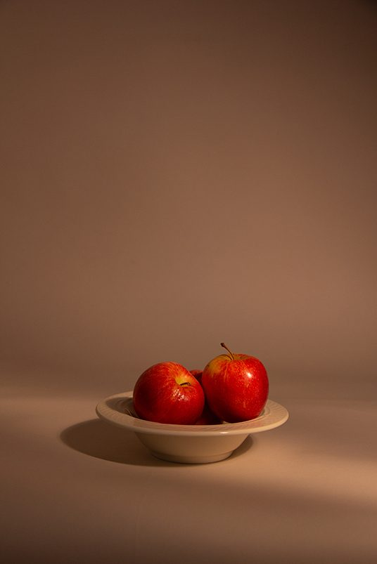
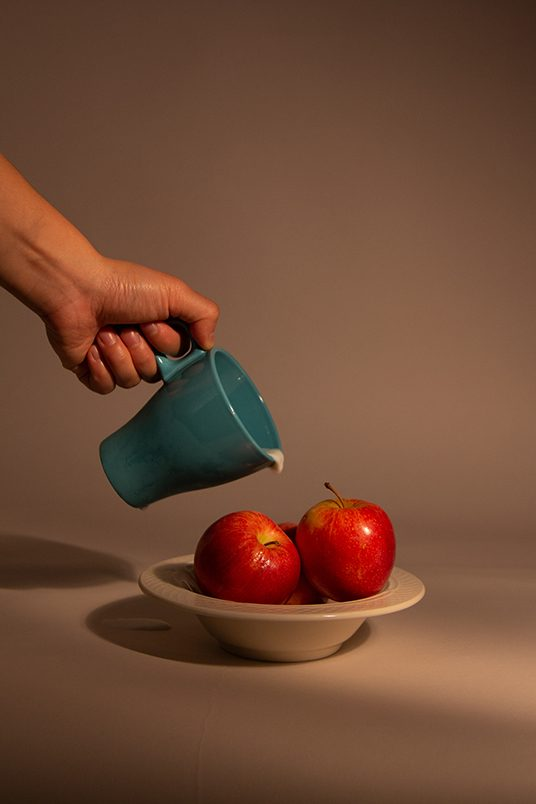
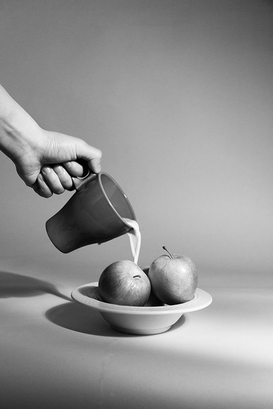

PHOTOGRAPHY

DIGITAL CAMERA: Dream1

DIGITAL CAMERA: Dream2

DIGITAL CAMERA: Dream3
When I was in LAGCC, I took photoprahy as my major. here is some of my old pieces. The "Dream" were made for Lighting Studio I. And 35mm Films "Finding the Red" and "Location" are for my Color Films class.
For the "Dream" Project: I set up a really small studio in my room, I borrowed some color effects filters from school. I had very limited equipment. It was a remarkable experience.
For my color film class: I had 2 projects.
The First one is "Location", What I need to do is walk around, and take photos whenever I see any building or street views that interests me.
The Second one is "Finding the Red", I was inspired by a female photographer named Vivian Maier. She was an American street photographer whose work was discovered and recognized after her death. She worked for about 40 years as a nanny, mostly in Chicago's North Shore, while pursuing photography. She was an amazing street photographer. I love her works very much.